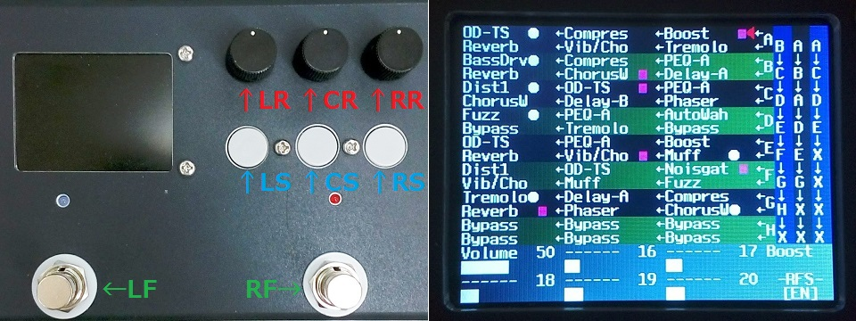

RasPd3 操作方法
2018年10月22日 カテゴリー：Raspberry Pi エフェクター
RasPd3の内部プログラムが概ね完成したので、自分用に取扱説明書のようなものを記載しておきます。LCDの文字が小さいですがなんとか大丈夫そうです。そのうちタップテンポやチューナーも実装できたらいいなと思っています。

＜コントロール類と略称＞
・左側ロータリーエンコーダ：LR
・中央ロータリーエンコーダ：CR
・右側ロータリーエンコーダ：RR
・左側押しボタンスイッチ：LS
・中央押しボタンスイッチ：CS
・右側押しボタンスイッチ：RS
・左側フットスイッチ：LF
・右側フットスイッチ：RF
＜画面中央 緑色領域＞
・エフェクトの種類とエフェクトパラメータを「プリセット」として8パターン（A～H）保存
（Pure Dataのプログラムを「パッチ」と呼ぶので、混同しないよう「プリセット」という呼称にしている。）
・プリセット1つにつき直列に6つのエフェクト（上3つ→下3つへ繋がっている）
・エフェクトは内蔵エフェクト20種類から選択（1つのプリセット内で複数重複使用は不可）
・エフェクトオン状態のエフェクトの名前右横に白色の丸印がつく
・「RF割当」を設定したエフェクトの名前右横に紫色の四角形がつく
※RF割当：プリセット内部モード（後述）時、RF押下でオンオフが切り替わるエフェクトを割り当てられる。
【例】ディストーション（オン）とコーラス（オフ）にRF割当を設定しておくと、RF押下時にディストーションをオフ、コーラスをオンという風に切り替えられる。
＜画面右側 青色領域＞
・プリセットの切替順番を3パターン保存
・フットスイッチで上下にプリセットを切り替える
＜画面下側 灰色領域＞
・エフェクトパラメータを表示
・エフェクトオンの場合、右に[ON]が表示される
・「RF割当」を設定している場合、右に[EN]が表示される
＜2種類のモード（●プリセット切替、◆プリセット内部）と操作方法＞
※LSを押しながらCSを押す：データ保存、押し続けるとシャットダウン（両モード共通）
●プリセット切替モード
複数のプリセットをフットスイッチで切り替えるモード。プリセット切替の順番を編集できる。
LR：カーソル左右移動
CR：カーソル上下移動
RR：プリセットA～Hまたは「X」を選択
※「X」を選択すると、フットスイッチでのプリセット切替時にX以降への切替がキャンセルされる。
【例】A→B→C→D→X→F→E→Gの場合…Dの後はA、Aの前はDに切り替わる。
LS：「プリセット内部モード」へ切替
CS、RS：なし
LF：プリセット切替（下側へ）
RF：プリセット切替（上側へ）
◆プリセット内部モード
1つのプリセット内で単独もしくは複数のエフェクトのオン・オフを切り替えるモード。エフェクトの種類やパラメータを編集できる。
LR：カーソル左右（エフェクト順番）移動
CR：カーソル上下（プリセット間）移動
RR：エフェクトの種類またはバイパスを選択
（エフェクトパラメータ編集時は、各ロータリーエンコーダでパラメータを増減させる）
LS：押す度にエフェクトパラメータ上段→エフェクトパラメータ下段→エフェクトの種類へと編集箇所切替
CS：「プリセット切替モード」へ切替
RS：「RF割当」設定／解除
LF：選択中のエフェクトをオン／オフ（オンの時、左側LED点灯）
RF：「RF割当」が設定されたエフェクトをオン／オフ